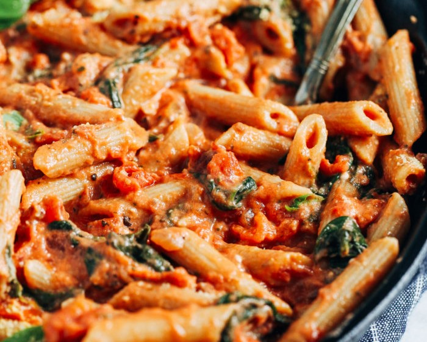

Cooker's Kitchen

Creamy Tomato and Spinach Pasta
Ingredients:
- 1 pound pasta
- 2 tablespoons olive oil
- 1 medium onion, chopped
- 2 cloves of garlic, minced
- 2 cans of diced tomatoes
- 1/2 teaspoon dried basil
- 1/2 teaspoon dried oregano
- Salt and black pepper to taste
- 1 cup heavy cream
- 4 cups fresh spinach leaves
- 1/2 cup grated Parmesan cheese
- Fresh basil leaves, for garnish
Instructions:
- Cook the pasta according to the package instructions until al dente. Drain and set aside.
- In a large saucepan, heat the olive oil over medium heat. Add the chopped onion and cook until softened, about 5 minutes.
- Add the minced garlic and cook for another minute, until fragrant.
- Stir in the diced tomatoes, dried basil, oregano, salt, and black pepper. Simmer for 10 minutes.
- Transfer the tomato mixture to a blender and puree until smooth.
- Return the puree to the saucepan and add the heavy cream. Cook over low heat, stirring occasionally, until heated through.
- Stir in the fresh spinach leaves and cook until wilted, about 2-3 minutes.
- Toss the cooked pasta with the creamy tomato and spinach sauce.
- Serve the Creamy Tomato and Spinach Pasta hot, sprinkled with grated Parmesan cheese and garnished with fresh basil leaves.